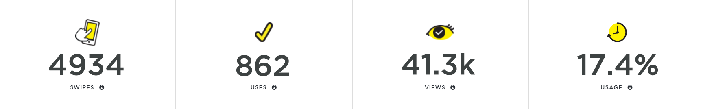

My snapchat filter designs
These snapchat filter designs were created to promote events for my performance group. Collectively, my filters have been used over 800 times!
Goals
- To promote information regarding upcoming concerts to students on campus
- To engage local fans through the fun of social media activities
- To reach out to new audiences through the platform of Snapchat
Production
- Adobe Illustrator
- Adobe Photoshop
- Published through Snapchat's Geofilter Create platform
Performance
- Users swiped through these filters 4934 times
- The filters were sent to a friend or added to a story by users 862 times
- The filters received 41.2k views